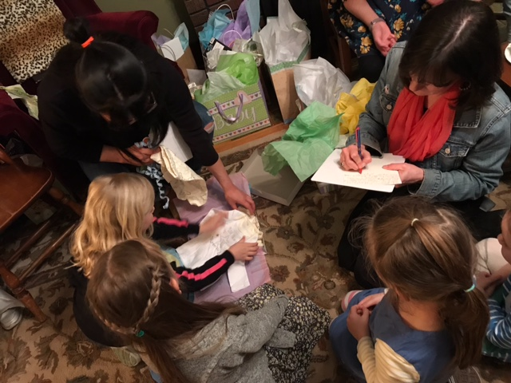
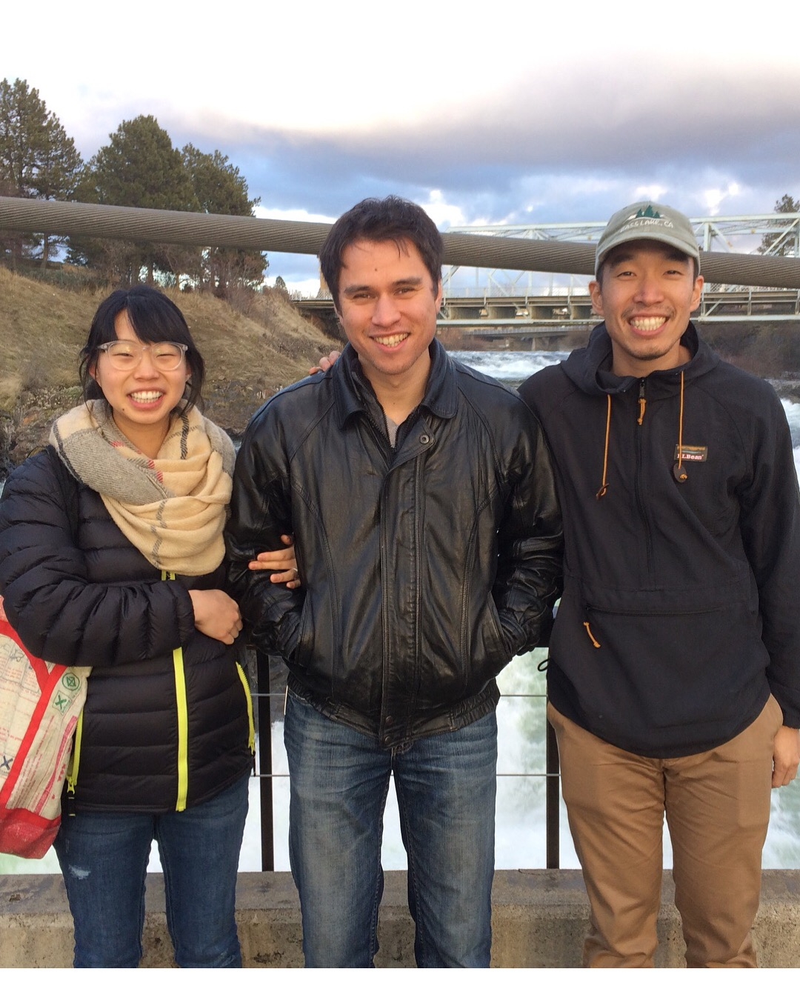
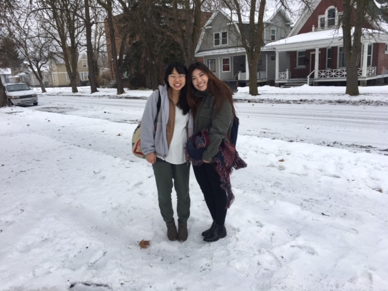
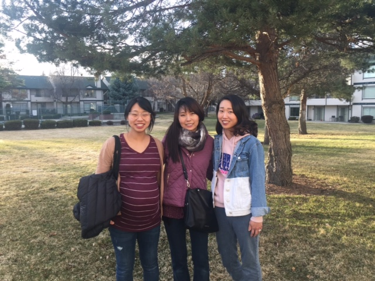

Remembering Our Need
“And you were dead in the trespasses and sins in which you once walked, following the course of this world, following the prince of the power of the air, the spirit that is now at work in the sons of disobedience– among whom we all once lived in the passions of our flesh, carrying out the desires of the body and the mind, and were by nature, children of wrath like the rest of mankind. BUT GOD, being rich in mercy, because of the great love with which he loved us, even when we were dead in our trespasses, made us alive together with Christ– by grace you have been saved– and raised us up with him and seated us with him in the heavenly place in Christ Jesus…” Ephesians 2:1–6
My natural tendencies make it so easy for me to overlook my sin and in turn, for me to take the sacrifice of Jesus lightly. The fact that “He was despised and rejected by men; a man of sorrows, and acquainted with grief…” (Is. 53:3) starts to mean less and less the more self-sufficient I feel, the more righteous I feel by my actions and speech. God has been constantly reminding me of my pride as He has shown me how selfish I am in my marriage, in my reliance on myself, in my desire to control as much as possible (especially with the baby coming), so that Christ’s suffering for me isn’t just another mass-produced painting that I pass by on the way to the bathroom, but a beautiful masterpiece of cosmic, incomprehensible love that captivates my soul and entire being. I am in great need of Him. I am utterly dependent on Him.
Thinking about the great price He paid this weekend, how “it was the will of the LORD to crush him” (Is. 53:10) for our sake… I am overwhelmed with how much has been given to us in addition to this “imperishable, undefiled, unfading” (1 Pet. 1:4) treasure (what more could we even want, really??). I hope and pray that even in sorrow over our sin that put Jesus on the cross, we see the light of His resurrection in the horizon, offering hope, true life, and endless joy!
All glory to God, who in His mercy, wisdom, and POWER has chosen to bring Himself glory by freeing us from the bondage of sin that we might be slaves to righteousness — new and redeemed creatures (I still can’t believe He chose me!)!
There is nothing on this earth — suffering the effects of sin, persecution from the world, life-threatening circumstances — that can take away our joy and the love we have in Christ.
“No, in all these things we are more than conquerors through him who loved us. For I am sure that neither death nor life, nor angels nor rulers, nor things present nor things to come, nor powers, nor height nor depth, nor anything else in all creation, will be able to separate us from the love of God in Christ Jesus our Lord.” Romans 8:37–39
Thanksgiving
There are countless reasons God has given us to give thanks! Us on Ryan’s 27th birthday! P.S. they call it a “hearty glow”
Since our last update, we have communicated with our missions agency, Action International Ministries, and with ACTION Cambodia (our team) in order to map out our departure. We have been approved to buy plane tickets for mid-August!
 Some little ladies helping Rebekah open gifts at the baby shower In addition to this, Rebekah is super pregnant; just under 3 weeks away (April 19th) from her due date! The baby looks healthy so far and she has had an easy pregnancy overall (: Some ladies from church generously threw her a baby shower – we were blown away! Such an encouragement; God has given us more than enough to be prepared for when the baby comes.
We have had many visitors stay with us, as well! In January, Sam Chun from Valley Bible Church in LA came to spend some time with us. In February, Rebekah’s friend from college, Phoebe Chen, came to visit! In early March, Ryan’s dad visited to treat us to a nice dinner with him before the baby comes. Lastly, a few days ago, Rebekah’s mom and older sister, Ruth came to help us prepare for the baby and celebrate with us at the baby shower (:
 
Logistics and Preparation
Since we are leaving the States in mid-August, we are planning our exit strategy :) We are hoping to drive over to Seattle at the end of July to visit family, church and friends for a few days. We are then planning to make a stop in Oregon, and reach northern California by the beginning of August. We hope to spend a week or so in Southern California to spend time with Valley Bible Church, Arcadia Bible Church and some of Rebekah’s family to depart for Cambodia from there.
We are currently making lists of things to keep and give away, store and sell. Rebekah is finishing up her Bible classes, while Ryan is continuing to work as a self-employed web developer.
We are looking to sell our car (2014 yellow Chevy Spark) before we leave, ideally in Southern California so we can get around before we depart. If you know of anyone that might be interested, let us know :)
Prayer Requests
Pray for Cambodia:
- An election is coming up at the end of July. This could mean few small changes in Cambodia’s government or it could mean many drastic ones! Pray that any changes would not make it more difficult for the Church there.
Pray for our team:
- There is a young family praying and seeking God about joining the team; please pray for wisdom and guidance for them.
- At this time, the whole ACTION Cambodia team is in the States on home assignment. Pray for their health, rest, recovery, that their families would be strengthened, and that their hearts would be encouraged as they spend time with loved ones.
Pray for us:
- As we prepare to become new parents and head to the field, please pray that our marriage would be grounded more and more in truth. Pray also for wisdom and trust in God as we have no idea how to raise a child :)
- Please pray for diligence as we continue to work and study here in the States.
We pray that you are also able to remember the joy and beauty of this weekend two-thousand years ago.
Thankful for you all,
Ryan and Rebekah